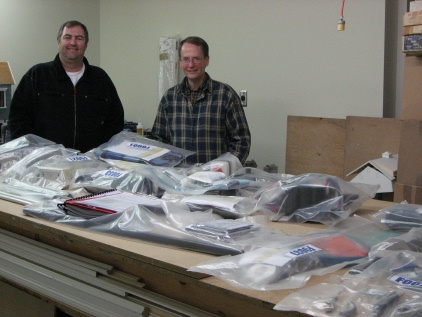

|
In early 2006 I contacted the EAA to ask about the process for obtaining FAA "approval" of the Pipistrel
kit. I had read a few articles about the process over the years and understood the basic idea, but was ignorant of the
specifics. I had also discussed the approval process with Michael Coates at Pipistrel USA. Michael had worked
with the Pipistrel factory in developing the kit version of the Pipistrel Sinus and Virus, and had specifically defined the
kit build process with the FAA in mind.
By the way, Pipistrel USA is located in Australia because Michael
took a personal interest in these aircraft, perceived that there was a market for a kit version, and convinced Pipistrel
to develop the kit. Michael spent a lot of time in Slovenia to define the kit contents and construction process so as
to be compliant with the FAA amateur-built checklist, which is also used by the CAA in Australia. Since Michael already
had an established international business with international marketing experience (X-Air Australia and its line of XCOM radios
are Michael's company), Pipistrel gave Michael the US marketing and export license. Michael's support via e-mail, phone
and the Pipistrel USA web site are first-rate.
Basically, the FAA rule is that in order for an aircraft to be registered
as Experimental Amateur Built, the builder has to perform the "major portion" of the work. The major portion
is interpreted to mean 51%; hence, the rule has become know as the 51% rule. To further guide the field process of aircraft
inspection and certification, the FAA provides a standard checklist -- FAA Form 8000-38. The FAA inspector or designee
who examines an aircraft for certification refers to the checklist and uses the documentation provided by the builder to determine
which steps in the checklist have been performed by a manufacturer, and which have been performed by the builder. After
going through the checklist, if there are more checks in the builder column than in the manufacturer column, then the aircraft
can be registered as Experimental Amateur-Built. It's that simple.
The FAA checklist contains about 150
items, of which about 65 are applicable to this aircraft. The checklist items describe tasks of fabrication, assembly
and installation. So, for instance in the fuselage section there is a step for fabricating brackets and fittings and
a step for installing brackets and fittings. If a manufacturer does the fabrication and the builder does the installation,
then the score is 50-50. That scoring continues through the checklist in similar fashion. My initial inquiries
were to ensure that I understood the process correctly, to find out who was authorized to evaluate the Pipistrel kit, and
ensure that I was properly pursuing the path to a favorable outcome.
Recently there has been a fair amount
of discussion in various homebuilt aircraft publications related to factory builder-assist programs and custom shops that
work with builders to construct kit aircraft. When a builder actually does the work with guidance from shop personnel,
then it can be fairly stated that a task was performed by the builder. But when the shop does the work while the builder
watches, or with only occasional builder visits during the build process, then the intent of the rule has not been met.
Individual builders and shops who attempt to stretch the boundaries of the rule are not doing any favors for the homebuilt
aircraft movement. I wanted to be absolutely above board in this evaluation, and ensure that we did things correctly.
My personal goal was to get my own aircraft certified in the amateur-built category, and getting a formal FAA evaluation
of the kit was an important step. I could have simply bought the kit, built it and documented the process, then had
it evaluated as a one-off project at the final airworthiness inspection, but I really wanted the up-front endorsement and
was happy to support Pipistrel's objective for obtaining US FAA evaluation of the Pipistrel kit. I should note that
terms like "approval" or "certification" don't apply to this process. What really happens is that
the kit is "evaluated" against the checklist, the results of that evaluation are filed with the FAA in Oklahoma
City, and a letter documenting the results is sent to the manufacturer. The evaluation finding applies only to the specific
kit and builder manual that was the subject of the evaluation, and each subsequent modification to either the kit or the manual
must be submitted to determine whether the original evaluation is affected, and whether the Major Portion finding still applies.
To me, this all seems reasonable and appropriate. The current FAA Form 8000-38 and the FAA implementation
of the regulations are actually quite favorable to US homebuilders, due mainly to years of dedicated work by
the EAA, acting in cooperation with supportive FAA personnel. We all need to be sensitive to the political pressures
that arise from public perception surrounding the idea of people building airplanes in their garages and then flying them
over homes and school yards, and we need to do everything we can as individual builders and pilots to avoid jeopardizing the
privileges that we enjoy.
So, the EAA provided the name of a contact at the Seattle-area FAA Manufacturing Inspection
District Office (MIDO). The MIDO has jurisdiction for experimental kit evaluations as part of its general charter for
overseeing aircraft manufacturing and modification activity. I called the MIDO and was provided a copy of Form 8000-38,
plus some verbal guidance regarding my role in representing the Pipistrel factory during the evaluation. I
was advised to not touch anything in the kit until the initial evaluation had been completed.
My initial
MIDO contacts yielded a series of statements of opinion that were to some degree confusing and contradictory. At one
point the MIDO provided a list of FAA Designated Airworthiness Representatives (DARs) in the region, so in order to cut through
some of the fog, I picked several DARs that were either local or had some homebuilt aircraft experience and sent e-mail feelers
to see if any of them were interested in providing me some professional consultation on the kit evaluation process, and help
me decide how best to position myself for a favorable evaluation. Since the Pipistrel kit is delivered in a fairly advanced
state of prefabrication relative to most kits, I wanted to avoid getting an unfavorable initial evaluation and have to then
coordinate potential changes to the kit. A few of the DARs responded to my e-mail, and there were three that appeared
to have the right experience and were willing to provide their professional services. I picked one of them and paid
him to spend a few hours at my house going through the kit and the checklist, and provide some advice on how to proceed.
All this took a few months to work through after receiving the kit in early July, 2006. Meanwhile, Michael
Coates of Pipistrel USA had completed a successful evaluation of the kit in Australia. The Australian Civil Aviation
Authority (CAA) uses the FAA form for their evaluation, downloaded from the FAA web site. Michael sent me a copy of
the Form 8000-38 as it was filled in for the successful CAA Pipistrel kit evaluation and offered to make a trip to Seattle
to be present for the FAA kit evaluation. That sure sounded like a good idea to me, because he could not only speak
authoritatively on behalf of the Pipistrel factory, but he knew the kit extremely well, so he could better answer any detalied
questions from the FAA inspector. Michael could also better explain the rationale used in marking the checklist during
the CAA evaluation.
So, in mid-November the MIDO assigned one of their inspectors to spend a day at my house to
perform the evaluation. Michael flew in from Australia to participate. In the end, it went very well. Michael's
presence was very helpful in answering questions, and the CAA checklist proved a valuable reference. The FAA inspector
started with a paragraph-by-paragraph read of the kit manual, inspecting the related kit components and asking questions as
he went. He became increasingly impressed with the quality of the kit components and the thoroughness of the manual
as we went along. Once the credibility of the kit and the manual were established, the later phases of the evaluation
went somewhat faster, but the inspector gave everything a pretty thorough going-over. I should add that the excellent
and logical packaging of the kit by the Pipistrel factory, the meticulous inventory records and the extensive documentation
obviously made a favorable impression. The final score was comfortably in favor of amateur-built status. Because
the kit construction process is identical for the Sinus and Virus aircraft, the inspector agreed that the evaluation would
be applicable to kits for both models. The final step is for the inspector to complete his report and send it to FAA
headquarters. The FAA will then send the letter of acknowledgement to Pipistrel in Slovenia.
The FAA
inspector was in the end very enthusiastic about the aircraft, and asked that I give him a call when I'm done, so that he
can be the one to perform the final airworthiness inspection. I consider that a most favorable endorsement, and it mirrors
my own very positive impression of Pipistrel and their products. The inspector also told Michael that the quality of
the kit and the kit manual were the best he had seen.
So, with the kit evaluation complete, I am now free to commence
actual construction.

|
| Michael Coates and I -- happy with the successful FAA evaluation |
|